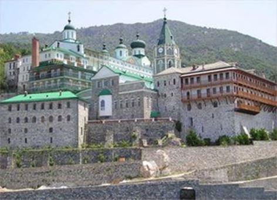
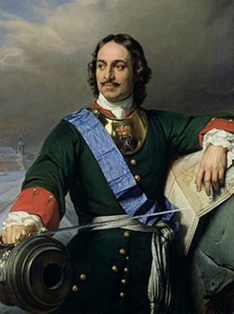
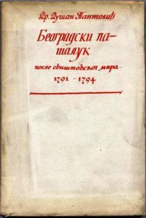
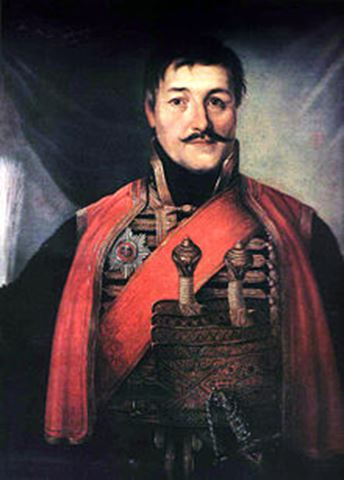
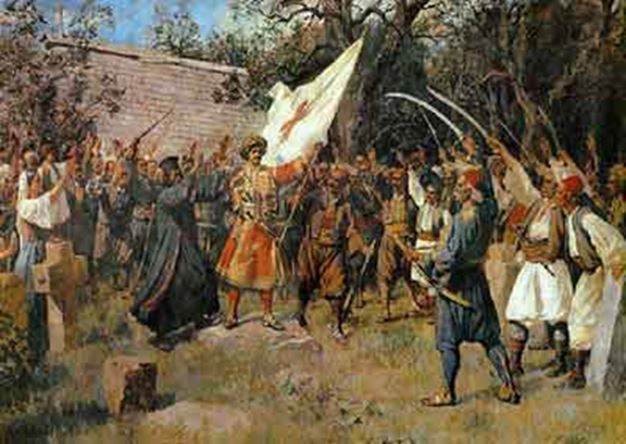
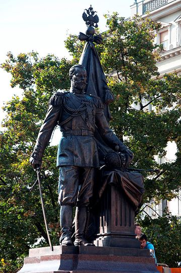
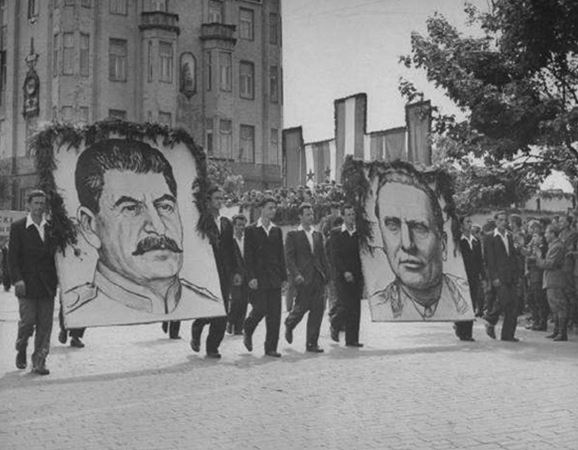
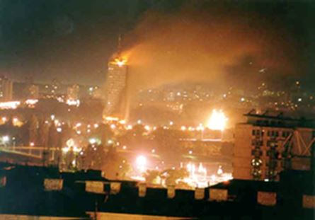
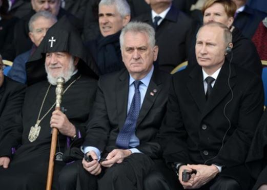
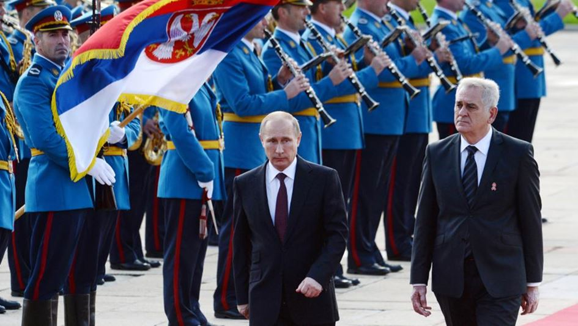

L’amitié entre Russes et Serbes n’est pas un vain mythe. C’est une réalité spirituelle, culturelle et charnelle que peu de peuples ont réussi à bâtir et ça n’est pas pour rien qu’aujourd’hui encore, malgré les hauts et les bas inhérents à n’importe quelle fratrie, la Serbie regarde la Russie comme son grand frère et que les Russes voient les Serbes comme leurs cadets. Cette fraternité remonte de manière tout à fait naturelle à la même origine slave de ces deux peuples qui partagent une langue slave, une culture slave et une mentalité slave bien que vivants dans des régions bien distinctes d’Europe. Ce sont également deux peuples qui se sont forgés à travers leur fidélité à leur foi chrétienne orthodoxe.
Entre les XIIIème et XVème siècles quand les Serbes sont une très grande puissance dans les Balkans et une des plus importantes d’Europe, ils vont soutenir le monastère russe de Saint Panteleimon au Mont Athos alors que les Russes sont sous la menace des Tatars. A la même époque Gregory Tsamblak (d’origine bulgare mais ayant séjourné en Serbie notamment au monastère de Visoki Dečani) et Pakhomy Logofet (dit Pakhomy le Serbe) vont largement contribuer à améliorer le style russe de rédaction des chroniques et corriger les livres liturgiques.
Dès l’arrivée des Ottomans au XIVème siècle et l’occupation du royaume serbe les relations avec les Russes vont naturellement se compliquer mais les Russes ne vont pas oublier le soutien que les Serbes leur ont apporté ni les abandonner pour autant, bien au contraire. Certains Serbes vont décider d’aller s’installer en Russie comme Lazare le Serbe, moine, qui va construire la première horloge mécanique publique russe pour le fils ainé de Saint Dimitri Donskoï, le grand prince Vassili Ier de Moscou en 1404. Aussi, il est moins connu que la mère d’Ivan le Terrible était Elena Glinskaya elle-même fille de la princesse serbe Anna Jakšić. Tout au long de l’occupation ottomane les dynasties russes vont aider les Serbes : le tsar Boris Godounov proposera des terres aux Serbes et le tsar Mikhail Federovich, fondateur de la dynastie des Romanov, aidera financièrement le patriarcat serbe en Métochie à Peć.
La fraternité russo-serbe prendra encore plus d’ampleur sous Pierre Ier le Grand (Tsar de 1682 à 1725) qui a fait venir de nombreux Serbes pour servir dans son armée et qui se sont notamment battus à la bataille de Poltava contre Charles XII de Suède. Pierre Ier fit également venir de nombreuses familles serbes dans l’Empire qui s’installèrent en Slavo-Serbie sur la rive occidentale du Donets1. Des historiens serbes estiment à plusieurs dizaines de milliers le nombre de Serbes partis s’installer sur les terres russes nouvellement conquises aux Ottomans et qui se situent aujourd’hui pour partie dans l’actuel Donbass en feu.
Pierre Ier se souvint qu’au Moyen-Age les Serbes avaient été très présents pour aider les Russes et voulut, à son tour, ne pas abandonner le petit frère sous l’occupation. Il fit envoyer le professeur Maxime Souvorov avec 400 abécédaires et 100 grammaires pour ouvrir une « école slave » près de la frontière autrichienne. De nombreux professeurs de l’Académie théologique de Kiev succédèrent à Souvorov comme Kozachinsky, Kazunovsky ou Minatsky. Des liens s’approfondirent avec Kiev et des dizaines de Serbes partirent s’y former. Quand l’impératrice autrichienne Marie-Thérèse aboli le statut spécial des Serbes vivant sur la frontière avec l’Empire Ottoman, de nombreux Serbes quittent l’Autriche et vont s’installer en Novorossiya, la Nouvelle Russie.
3 000 Serbes vont s’installer dans la région proche de Lougansk et Kirovograd pour protéger l’empire des incursions des Tatars de Crimée ou des menaces ottomanes. L’exode fut tellement populaire et important que l’Impératrice Marie-Thérèse revint sur sa décision mais interdit quand même aux officiers Serbes de prendre la nationalité russe. L’assimilation des colons serbes dans l’Empire se fait parfaitement et, même si on peut le regretter, en 1900 les descendants des Serbes en Nouvelle Russie sont tous russifiés, non de force ou par contrainte mas par l’assimilation progressive simplifiée par la foi commune orthodoxe et la proximité des langues et des peuples.
A la fin du XVIIème siècle les relations entre Russes et Turcs se détériorent et mènent à plusieurs guerres. En 1769 Catherine II invite les Chrétiens des Balkans à se révolter contre les Ottomans. Autrichiens et Russes s’allient et les révoltes serbes affaiblissent considérablement l’armée ottomane. En 1788 les Autrichiens chassent les Turcs de Belgrade mais pour une trop courte durée et l’Autriche doit rendre la ville blanche aux Turcs par le Traité de Sistova en 1791 qui fixe la frontière austro-ottomane sur la Save.
En 1803 l’Archimandrite serbe Arsenije Gagović rencontre l’Empereur Alexandre Ier et le supplie de venir en aide aux Serbes qui vivent sous le joug ottoman. Mais Alexandre ne peut pas car il est lié par le traité de Tilsitt qui l’empêche d’attaquer la Sublime Porte.
Quelques années plus tard George Petrović, plus connu sous le nom de Karageorges, mène les insurrections anti-ottomanes entre 1804 et 1813 et demande à la Russie de nouveau de l’aide quasiment au même moment où les Russes font la guerre aux Ottomans. Les Serbes remportent des victoires impressionnantes sur les Turcs et veulent même se ranger derrière l’Empereur Alexandre Ier et intégrer l’Empire russe. Une convention est rédigée et de nombreux projets préparés pour l’intégration mais Alexandre Ier préfère signer l’armistice de Slobozia en 1807 avec la Sublime Porte et abandonne les territoires de Serbie centrale à l’empire ottoman en ayant négocié quand même la vie sauve aux Serbes ayant participé aux révoltes. La Serbie implore alors l’aide de Napoléon et des Habsbourg mais en vain.
En 1810 le général russe M.I. Kutuzov reprend les rênes de la guerre contre les Turcs et envoie armes, munitions et soutien médical aux Serbes heureux de retrouver le soutien du grand frère mais la joie est de nouveau de courte durée, le 24 juin 1812 Napoléon attaque la Russie et les Russes doivent abandonner de nouveau les Serbes aux Ottomans qui font payer de nouveau aux Serbes une répression dans un bain de sang terrible pour s’être révoltés. Mais la Serbie, têtue, et rêvant plus que jamais de recouvrer son indépendance obtient sa première réelle autonomie au sein de l’Empire Ottoman grâce aux combats de Miloš Obrenović facilités par la victoire des Russes sur les Ottomans et la Paix d’Andrinople en 1829. En 1832 c’est même la Russie qui convainc la Sublime Porte de laisser les Serbes avoir, de nouveau, leur propre patriarcat.
La Russie demeure le modèle pour les Serbes mais la confiance en l’Empereur et l’aide de l’armée disparut jusqu’en 1867 sous le règne d’Alexandre II qui prête de l’argent à la Serbie et y envoie des armes, des munitions et des instructeurs militaires. A cette époque les idées slavophiles se répandent à Moscou et Belgrade et en 1875 les Serbes d’Herzégovine et de Bosnie se révoltent de nouveau contre les Ottomans et, bien que le ministre russe des affaires étrangères n’approuve pas ce soulèvement, des milliers de Russes s’organiseront pour envoyer de l’aide aux Serbes et plus de 3000 volontaires dont 700 officiers accoururent vers les champs de bataille.
En 1878 les Serbes obtiennent une indépendance sur une partie de leurs terres au traité de Berlin qui sera complétée après les guerres balkaniques de 1912 et 1913. A chaque étape Moscou a toujours soutenu d’une manière ou d’une autre l’émancipation du peuple serbe et son droit à l’indépendance et à recouvrer un Etat.
La Serbie souffrira beaucoup pendant la première guerre mondiale avec 1,25 millions de morts mais elle put compter sur le soutien de Nicolas II de Russie.
Lorsque l’armée serbe dut fuir en Albanie chassée par les armées autrichiennes et allemandes, le tsar russe écrivit à ses alliés britanniques et français qu’il se retirerait de la guerre si ces derniers n’envoyaient pas des navires au secours des Serbes. Après la révolution d’octobre et l’assassinat du dernier Romanov, Belgrade fut la deuxième ville à accueillir le plus de réfugiés russes après Paris. En son honneur, une statue géante de Nicolas II a été érigée le 11 novembre 2014 en plein centre de Belgrade juste à côté du centre culturel russe.
Avec la victoire des Bolchéviques à Moscou les relations vont se distendre avec la Royaume des Serbes, Croates et Slovènes.
Après la deuxième guerre mondiale les peuples serbe et russe sont en deuil ; bien qu’ayant perdu des millions d’hommes dans un sacrifice incroyable pour battre le nazisme aucun des deux ne sera gouverné par un homme issu de son peuple avec un Georgien à la tête des Russes et un Croato-Slovène à la tête des Serbes. De surcroît Staline et Tito ne s’aimaient pas et les relations vont être très tendues pendant une petite dizaine d’années.
Les relations s’amélioreront progressivement après la mort de Staline en 1953.
Vers la fin du XXe siècle le monde issu de la guerre froide se fissure. Le mur de Berlin s’écroule le 9 novembre 1989 et la Perestroïka de Gorbatchev amène finalement les oligarques du monde entier à faire main basse sur l’Union Soviétique qui disparaît complètement fin 1991. Les Serbes, au sein de la Yougoslavie voient le monde se transformer et refusent le modèle libéral occidental qu’on veut lui imposer. La Yougoslavie n’est pas contre l’occident mais elle veut rester indépendante comme la Yougoslavie l’a été pendant toute la guerre froide. C’est pour cette seule raison qu’elle s’est attiré les foudres du camp occidental qui a voulu montrer quel est le prix à payer pour les pays qui refusent le nouvel ordre mondial cher aux néo-conservateurs américains. Par des manœuvres politiques extérieures et en réveillant et finançant un ultranationalisme belliqueux, l’occident a eu la peau de la Yougoslavie et a réussi à diaboliser le Serbes qui, en l’espace de quelques mois, étaient passés de peuple ami historique de l’occident à l’incarnation même du diable.
La Russie a appuyé la Serbie avec plus ou moins d’ardeur pendant le début de cette tragédie. Eltsine a voté en faveur des sanctions contre les Serbes et l’envoyé spécial russe en Bosnie – Herzégovine, Vitaly Tchourkine, avait au départ abandonné les Serbes de Bosnie et conseillé au président russe d’utiliser la force contre eux. Mais la position russe a progressivement évolué suite aux pressions du peuple et des medias russes qui n’avaient pas oublié l’alliance historique et qui assistaient impuissants à l’expulsion de 250 000 Serbes de Krajina en Croatie, des massacres de milliers de Serbes autour de Bratunac en Bosnie et à l’expulsion de 200 000 Serbes du Kosovo et de la Métochie. D’ailleurs c’est grâce à l’intervention russe et de nouveau V. Tchourkine, cette fois-ci ambassadeur de la Russie aux Nations Unies, que l’accusation de génocide portée contre les Serbes a été rejetée purement et simplement par l’ONU en 2015.
Lors des bombardements illégaux de l’OTAN en 1999 Eltsine est maintenant tout à fait opposé à la guerre contre les Serbes qu’il déclare « illégale » mais la Russie n’était plus que l’ombre d’elle-même et, malgré les vociférations de son président, n’a rien pu faire pour aider son petit frère. Il y eut la prise de l’aéroport de Priština par des troupes russes à la barbe de l’OTAN mais ce fut une victoire symbolique et Washington et Bruxelles réussirent finalement à disloquer la Yougoslavie et inventer deux nouveaux Etats fantoches majoritairement musulmans en plein milieu de l’Europe : la Bosnie-Herzégovine et le Kosovo.
Les Serbes et les Russes avaient en commun à cette époque qu’ils avaient été vaincus tous les deux par le libéralisme occidental : les uns par les bombes et les autres par les dollars mais ça n’était qu’en apparence. Avec l’arrivée au pouvoir de Vladimir Poutine, le ton va changer radicalement et la Russie va reprendre son destin en mains et chasser les marchands du temple. La Serbie, encore sous le choc des guerres des années 1990 va continuer à résister héroïquement à la pression occidentale et refuser de reconnaître l’indépendance du Kosovo ce qui lui vaut une très forte pression, pour ne pas parler de répression, de la part des Etats-Unis et de l’Union européenne. Pour sa plus grande joie elle sait qu’elle peut de nouveau compter sur son grand frère russe qui s’est réveillé, et qui prend un rôle de plus en plus important sur la scène internationale. Moscou n’hésite pas à systématiquement intervenir en sa faveur pour refuser la reconnaissance du Kosovo et à soutenir le petit frère des Balkans militairement, économiquement ou politiquement. Enhardis par un tel support les Serbes vont de plus en plus renforcer leur relation historique avec la Russie qui le lui rend bien.
On aurait pu croire que la lune de miel serait de nouveau célébrée par l’arrivée au pouvoir en 2012 du nouveau président serbe Tomislav Nikolić et la nomination de son Premier Ministre Alexandre Vučić, deux fervents défenseurs de l’amitié franco-russe mais il y eut un coup de théâtre. On ne sait quelle pression a été exercée sur eux mais les deux politiciens serbes deviennent tout à coup timorés et développent une stratégie de grand-équilibristes tentant de plaire à la fois aux Atlantistes et aux Russes. Le jeu est dangereux et nombreux sont ceux qui vouent cette stratégie à l’échec car on assiste à des situations absurdes où, le même week-end, l’armée serbe va effectuer des exercices militaires avec l’armée russe et biélorusses appelés « Fraternité slave » et en même temps participer à des exercices avec l’Otan au Monténégro.
Ça n’a pas de sens et on voit bien que l’Etat serbe est déchiré entre deux camps jusqu’au tréfonds de ses entrailles avec Nikolić plutôt pro Moscou qui dira en 2013 : « La seule chose que j’aime plus que la Russie, c’est la Serbie » et Vučić plutôt pro Washington qui est allé faire son mea culpa devant Bill Clinton, le président US qui a bombardé la Serbie, en septembre 2016 et qui fait de trop larges concessions aux Atlantistes.
Le dilemme est complètement cornélien entre l’UE, dont la Serbie a besoin économiquement, et la Russie que la Serbie aime fraternellement. Deux tiers des importations et exportations de la Serbie se font avec des pays de l’Union européenne, ce qui explique pourquoi la Serbie n’ose pas franchir le Rubicon d’un plus grand partenariat avec la Russie qui ne pourra peut-être pas compenser les pertes économiques importantes si la Serbie lâchait ses partenaires de l’UE. Aujourd’hui la Russie représente 10 % des importations serbes et seulement 7 % des exportations serbes. Ces choix ne plaisent à personne mais on peut se réjouir qu’il y ait quand même un camp pro-russe très important au sein de l’administration serbe qui reflète réellement les aspirations de la quasi-totalité du peuple serbe qui préfère de loin Moscou à Washington et Bruxelles.
Ainsi malgré les sanctions imposées à la Russie par le camp occidental, la Serbie refuse coûte que coûte de les imposer malgré les ukases de Bruxelles. Du reste Moscou comme Belgrade parlent d’un « partenariat stratégique » entre les deux pays. Bien que partenaire pour la paix de l’OTAN depuis 2006, la Serbie est également observateur de l’Organisation de Sécurité Collective russe, importe 80 % de son gaz de Russie et la Russie a établi un centre humanitaire impressionnant au sud de la Serbie à Niš.
Ce jeu sur deux tableaux exaspère tout le monde mais encore plus Bruxelles et Washington que Moscou. Ce mois de janvier 2017 est d’ailleurs plutôt encourageant : le ministre des affaires étrangères russes Sergueï Lavrov était en visite à Belgrade au début du mois et le premier ministre serbe était à Moscou à la fin. Lors des deux visites il a été acté que la Russie donnerait six avions de combat Mig-29 à la Serbie ce qui fait dire à Ivica Dačić, le Ministre des affaires étrangères serbes, que « la Serbie ne deviendra jamais un Etat antirusse et ne rejoindra jamais ceux qui appliquent des sanctions à la Russie. » Ces avions viendront renforcer l’armée serbe qui avait déjà acquis deux hélicoptères Mi-17-V5 en juillet dernier. La Russie a intérêt à maintenir une forte relation avec la Serbie pour maintenir son influence dans les Balkans où quasiment tous les pays sont sous la coupe de l’UE et de l’OTAN (la Croatie, l’Albanie, la Slovénie et peut-être bientôt le Monténégro) et compte sur le fort soutien de la Serbie mais également de la Republika Srpska, l’entité serbe de la Bosnie-Herzégovine dont le président Dodik est une ferveur défenseur des relations fortes avec la Russie.
Aujourd’hui la situation de la fraternité est délicate : la danse du ventre de Vučić aura des limites car la Serbie n’a pas assez de pouvoir pour imposer une neutralité parfaite et une alliance économique avec les deux blocs atlantiste et russe. Le camp de l’UE ne cesse de réprimer Belgrade à ce sujet et les Russes, bien que très patients, se demandent bien quand le petit cirque du premier ministre serbe va s’arrêter. Le peuple serbe, lui, a très nettement exprimé sa préférence pour Poutine et la Russie. Lors de la venue du président russe à Belgrade en 2014 des milliers de Serbes étaient descendus dans la rue pour acclamer le leader russe.
En novembre 2011 quand les Serbes du Kosovo sentaient que le gouvernement de Belgrade ne les soutenait qu’à moitié, 21 000 Serbes ont adressé une demande de citoyenneté à Moscou estimant que Poutine protégerait mieux les Serbes du Kosovo et de la Métochie que le gouvernement serbe. Du reste des autocollants à l’effigie de Poutine ornent de nombreuses rues des enclaves serbes où il est extrêmement populaire tout comme dans le reste de la Serbie. L’adage populaire dit que les politiciens passent et que le peuple reste, le peuple serbe n’a peut-être pas le gouvernement qu’il lui faut en ce moment mais il sait qu’il peut compter sur Moscou pour être patient mais aussi pour le secouer et le remettre dans le droit chemin. Après tout c’est aussi à cela que servent les grands frères.
N.M.
1Aujourd'hui cette ancienne région se trouve entre l’oblast de Lougansk au Donbass et l’oblast de Rostov-sur-le-Don en Russie. Le centre administratif de la Slavo-Serbie était la ville de Slovianoserbsk au nord-ouest de Lougansk. De nombreux Serbes s’y battent du reste encore aujourd’hui pour la défense du Donbass.
Partager cette page